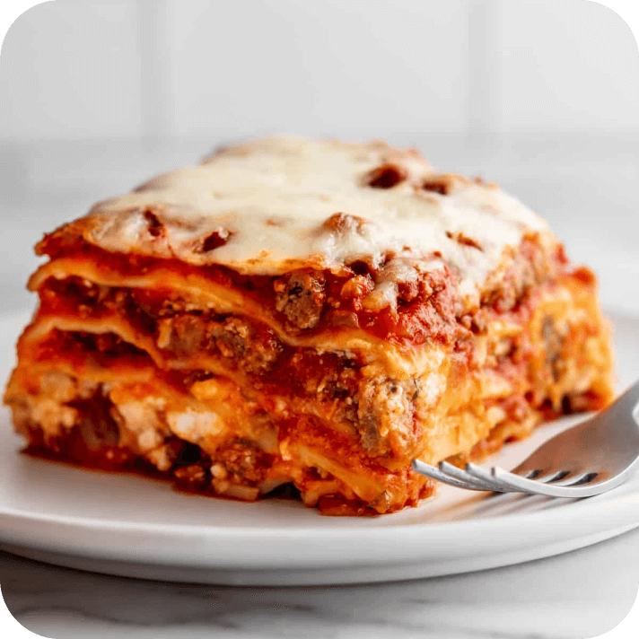

Lasagna

A classic and delicious lasagna recipe
This classic Lasagna Recipe is cheesy, saucy and full of flavor! Make this easy lasagna recipe for a family dinner or to feed a crowd.
My secret for making the best easy lasagna? Use store-bought marinara sauce. As long as you use a good quality sauce that you love, your lasagna will turn out so flavorful, and you'll have saved a lot of time and effort in the kitchen.
Ingredients
- Lasagna noodles
- Onions
- Ground Beef
- Garlic
- Marinara Sauce
- Salt, Pepper and Italian Seasoning
- Fresh Parsley
- Egg
- Ricotta Cheese
- Mozzarella Cheese
- Parmesan Cheese
How to Make Lasagna
- Preheat oven to 375° F
- Boil the noodles
- Brown the ground beef with onion and garlic
- To the pan, add the marinara sauce, Italian seasoning and fresh parsley. Simmer the sauce for 10 to 15 minutes.
- In a bowl, stir together the ricotta cheese and an egg. Shred the mozzarella cheese.
- Layer the lasagna
- Bake until hot and bubbly
Go Back